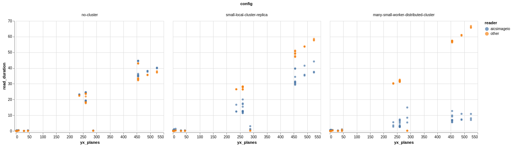

Benchmarks¶
The development team behind AICSImageIO care deeply about read time. We personally understand that it is a pretty common experience of simply trying to load a file into memory and that read resulting in minutes of waiting if the file is large enough.
These benchmarks are our attempt at ensuring we have comparable or better read times than the other common microscopy image reading libraries:
Results¶
{kind=link}
Full image read time (seconds) against number of YX planes in the image. (Lower is better) aicsimageio.imread read times in blue and imageio.imread, czifile.imread, or tifffile.imread read times in orange
Configs¶
no-cluster: single-threaded, nodistributed.Clientconnection availablesmall-local-cluster-replica: simulates adistributed.LocalClusteron common workstations at AICS. Four (4) Dask workers, each with two (2) cores available.many-small-worker-distributed-cluster: simulates the normal cluster setup that is preferred for large workloads. 128 Dask workers, each with one (1) core available.
Discussion¶
In single-threaded full-image read performance aicsimageio is at least comparable to the underlying core libraries. There is overhead from the metadata and dimension management, but that overhead is typically negligible compared to the raw data read times. By parallelizing with an underlying Dask implementation we are able to achieve gains that clearly increase performance in the distributed case. The more workers you provide to the cluster, the better it gets. With 128 workers reading ~500 YX plane files (~400MB) we see read times of about 10 seconds.
To gain concurrent read benefits from aicsimageio is as easy as:
from aicsimageio import imread, dask_utils
with dask_utils.cluster_and_client() as (cluster, client):
img = imread("my_file.tiff")
Note: There are two different ways for aicsimageio to load imaging data from a
file, either delayed or immediately in memory. Internally, aicsimageio determines how
to load the image data based off of which function you ran and if there is a
distributed.Client available in the current Python process. The only situation in
which imaging data will be read in a non-delayed fashion is when using AICSImage.data
or Reader.data while also not having a distributed.Client available in the current
Python process. This means that for all other situations and functions,
(AICSImage.dask_data, AICSImage.get_image_data, AICSImage.get_image_dask_data,
etc.), the imaging data is retrieved in a delayed fashion. We do this to optimize read
performance for the majority of situations we encounter as well as additionally
supporting file reading of any size imaging file. The benefits of this strategy can be
seen by our benchmark results above.
Historical Benchmarks¶
Benchmarks will be ran and published at least every “minor” release.
To view or download the charted benchmark results, please see: benchmarks
To view or download the raw benchmark result data, please see: quilt resources
Running the Tests¶
If you are interested in how we run our benchmarks please see the benchmark.py and chart_benchmarks.py files.
Unfortunately, these scripts utilize a
SLURM cluster to construct the various Dask
cluster configurations. If you have a different HPC cluster at your organization or
prefer using a cloud deployment and wish to run these tests yourself, please see
dask_jobqueue and
dask_cloudprovider and swap out the
SLURMCluster object for whichever object works best for you. Regardless of underlying
compute, we feel it safe to say the results should be fairly similar to what is
presented in this document.
Full commands to run benchmarks in a fresh environment:
conda create --name aicsimageio-benchmark python=3.7 -y
conda activate aicsimageio-benchmark
git clone https://github.com/AllenCellModeling/aicsimageio.git
cd aicsimageio
pip install --no-cache-dir -e .[benchmark]
python scripts/download_test_resources.py --top-hash 5e665ed66c1b373a84002227044c7a12a2ecc506b84a730442a5ed798428e26a
python scripts/benchmark.py